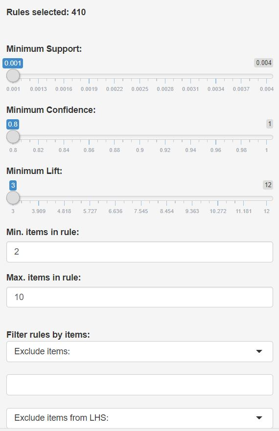
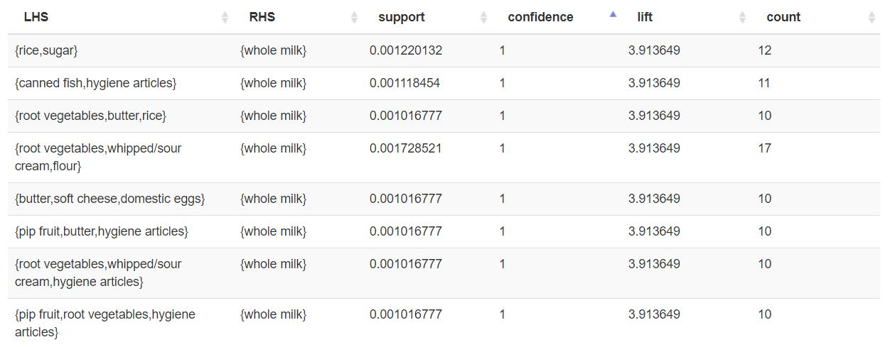
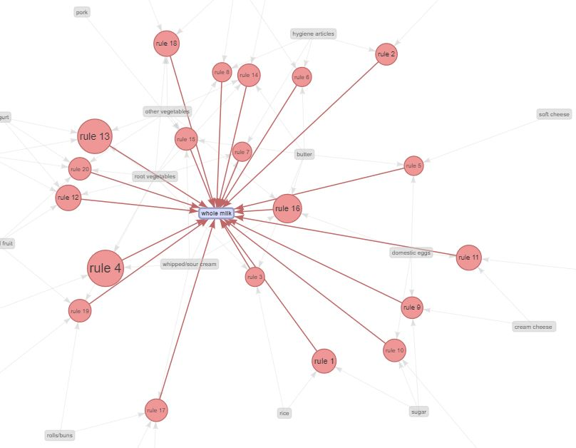
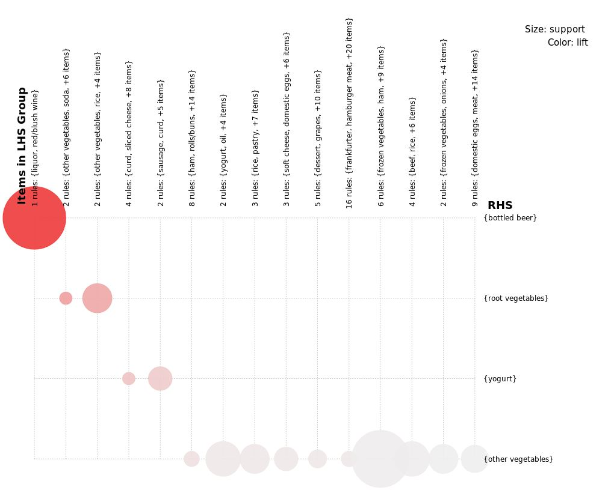

Shiny for ArulesViz
It's official: in 3.5 months, I went from never having written a line of code in the R programming laguage to contibuting a major feature to a popular R package! For anyone interested in looking at the source code referenced in this post, you can find it here.
The R Programming Language
R is an interesting programming language. R has been around since 1993, which makes it older than C++ and the majority of other languages in use today. It's easy to use and its primary purpose is data analysis, so it has seen a huge growth in popularity in recent years. R is a functional programming language but less intimidating (to me at least) than something like Lisp, which allows for some interesting and flexible use-cases.

There are two big draws to R: first, its simplicity, and second, its active package ecosystem for data science. R packages are the equivalent of Python packages - there's a standard location to which developers can upload packages and from which other developers can download and use those packages. R's package repository is called CRAN (The Comprehensive R Archive Network). When someone says they've developed an R package (like me!), it means that their code is available on CRAN so that anyone who has R installed on their computer can very easily download the package and use its functionality.
ArulesViz
The package I contributed to is called arulesViz. ArulesViz is a companion package to arules (both developed by Dr. Michael Hahsler at SMU), and both of the packages are concerned with mining, viewing, and utilizing association rules to garner insights from data. Association rules are basically a quick and easy way of finding easy-to-understand patterns in data, and determining which patterns are the strongest. These packages are quite popular - arules gets about 16,000 unique monthly downloads and arulesViz gets about 10,000.
As the name suggests, ArulesViz contains the functions for viewing association rules. ArulesViz can generate a variety of graphs, charts, and data tables that allow the user to explore the rules mined from their dataset. My job was to take the existing functions in ArulesViz and turn them into an interactive experience.
Shiny: Interactive Web Apps for R
I based my approach on a different R package: shiny. Shiny allows R developers to generate interactive web-based applications using R. For those of you familiar with Python, Shiny is kind of like Jupyter in that it allows R developers to export their code as interactive HTML demonstrations without ever writing a line of HTML.
My addition to arulesViz is a function, called ruleExplorer, that displays information about a set of rules using a shiny web app. The web app allows the user to filter the ruleset to the rules they are interested in and visually explore those rules. I’ll give examples of just some of the visualizations ruleExplorer allows using the Groceries dataset, which contains information about which groceries different shoppers purchased.

The first ruleExplorer display is an interactive data table. The data table shows a variety of metrics about the ruleset, including support (how many cases the rule applies in) and confidence (how often the rule is correct). The user can sort the data table by any of these metrics, and they can also add any other metrics to the data table.
An important aspect of ruleExplorer is the ability to filter down rules. A variety of controls allow the user to specify the rules of interest to them; they can set support and confidence cutoffs, for example, or restrict the LHS or RHS of the rules to contain only certain items. As a demonstration, let’s take on the role of a grocery store interested in what causes shoppers to purchase whole milk. We can restrict the rules so that only “whole milk” can appear in the RHS, we can set the support and confidence cutoffs to only find high quality rules, and we can sort the table to show the highest confidence rules first.
These results indicate that 100% of shoppers who bought rice and sugar also bought whole milk. Sometimes, it’s useful to see how the rules we’re interested in interact with each other. Using the rule graph option, the user can examine the interplay between the rules.
From the results of this graph, we can see that “hygiene articles” form the LHS of multiple rules that predict for whole milk. Hovering over one of the rules that involves hygiene articles will detail the rule’s metrics, such as support and confidence. The user can also drag nodes to different locations in the graph if needed to maintain clarity.
As a final example, we’ll looked at the grouped plot. The grouped plot shows a bunch of information at once: this plot shows how certain RHS combinations result in certain LHS combinations, using color and size to convey the relationship.
In this case, the size of a dot represents the support for the rule, and the color represents the lift. This allows us to see that, although \(\{curd, sliced cheese, …\}\) predicts for \(\{yogurt\}\), it is true more often that \(\{sausage, curd, …\}\) predicts for \(\{yogurt\}\).
Why it Matters
Visualization is a hugely important part of the data analysis process. Exploring the interaction between rules and comparing rules directly in a graph is a very intuitive way of understanding which rules are right for your use case. You can literally “see” the rules that you are choosing – this makes it far easier to choose the best rules.
Further, interactive plots make it even faster to select the rules you’re most interested in. For a static plot, examining the effect of filtering your rules (say, restricting the RHS) would involve graphing, writing some code, and graphing again. Putting that functionality into a slider or a drop-down list greatly simplifies and expedites that process.
In Summary
- I contributed a major feature, ruleExplorer, to a popular package, arulesViz, for a popular programming language, R.
- The package gets about 10,000 unique downloads per month.
- The package helps user determine which association rules give them the best insight into their data.
- Developing a package is a really good way to learn a programming language because you’re forced to learn the intricacies and wrinkles of the language.